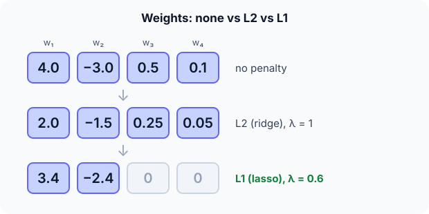

Prerequisites
- Bias–variance trade-off.
- Linear regression and its squared loss.
- Absolute values and squares.
The analogy
Everyday analogy
Think of a travel budget. Without limits, you'd buy everything that looks slightly useful. With a fee per item (L1), you drop the marginal items altogether; with a fee that grows with each item's size (L2), you keep everything but buy smaller versions.
Regularization adds such a fee to the model's loss: the model may still use large weights, but only if they reduce the error enough to pay for themselves.
How it works
Assumption for the numbers: features are standardized and uncorrelated (orthonormal). Then ridge and lasso have simple closed forms per weight; with correlated features the effect is similar but not exactly these numbers.
Start with four weights by hand
Unregularized weights $w = [4.0, -3.0, 0.5, 0.1]$. Ridge with λ = 1 divides each weight by $1 + \lambda$. Lasso with λ = 0.6 moves each weight towards 0 by 0.6, stopping at 0. Predict, then open "Check".
Example: predict before you read
Step 1. Apply ridge (L2), λ = 1.
Check
$[2.0, -1.5, 0.25, 0.05]$: everything halves; nothing becomes exactly 0.
Step 2. Cover the next line and guess: apply lasso (L1), λ = 0.6, to 4.0 and −3.0.
Check
$4.0 - 0.6 = 3.4$ and $-3.0 + 0.6 = -2.4$: big weights move by a fixed amount.
Step 3. Lasso on 0.5 and 0.1. Predict, and say which features the model now ignores.
Check
Both are smaller than 0.6 in size, so both become exactly 0. Features 3 and 4 are switched off.

Quick recall: Before reading further, cover the text above and say out loud: which penalty can set weights to exactly zero?
Check your answer
L1 (lasso). L2 only shrinks weights towards zero; it never makes them exactly zero.
Finish the picture: tuning λ
Try lasso with other strengths on the same weights $[4.0, -3.0, 0.5, 0.1]$.
- λ = 0.2. Predict the weights.
Check
$[3.8, -2.8, 0.3, 0]$: only the tiniest weight is removed.
- λ = 5. Predict the weights and what that means for the model.
Check
All four become 0: the model always predicts the same value. Too much regularization means underfitting; λ is chosen by cross-validation.
Quick recall: Without scrolling up, say out loud: what happens to the weights as λ grows very large?
Check your answer
They all shrink towards 0, and the model becomes too simple: it underfits (high bias).
Full worked calculation
The page's unregularized weights $\hat w = [4.0, -3.0, 0.5, 0.1]$, with orthonormal features (the case the code assumes). There, the data-fit term becomes $\tfrac12 \lVert w - \hat w \rVert^2$ plus a constant, so each weight can be solved separately. We derive both shrink rules, compute the cost before and after, and check what happens to a prediction.
| $w_1$ | $w_2$ | $w_3$ | $w_4$ | Fit cost added | Penalty | Total | |
|---|---|---|---|---|---|---|---|
| No penalty $\hat w$ | 4.0 | −3.0 | 0.5 | 0.1 | 0 | L2: 12.63 / L1: 4.56 | |
| Ridge, λ = 1 | 2.0 | −1.5 | 0.25 | 0.05 | 3.16 | 3.16 | 6.32 (vs 12.63) |
| Lasso, λ = 0.6 | 3.4 | −2.4 | 0 | 0 | 0.49 | 3.48 | 3.97 (vs 4.56) |
-
1Ridge for one weight
$$\frac{d}{dw}\Big[\tfrac12 (w - 4)^2 + \tfrac{\lambda}{2} w^2\Big] = (w - 4) + \lambda w = 0 \;\Rightarrow\; w = \frac{4}{1 + \lambda} = 2$$Setting the derivative to zero balances the pull towards the data ($w - 4$) against the pull towards 0 ($\lambda w$). With $\lambda = 1$ they meet halfway.
-
2Ridge for all four
$$w = \frac{\hat w}{2} = [2.0,\; -1.5,\; 0.25,\; 0.05]$$Every weight is divided by the same factor. Big or small, nothing reaches exactly 0, so all four features stay in the model.
-
3Ridge pays off
$$\underbrace{\tfrac12(4 + 2.25 + 0.0625 + 0.0025)}_{\text{fit cost} = 3.16} + \underbrace{\tfrac12(4 + 2.25 + 0.0625 + 0.0025)}_{\text{penalty} = 3.16} = 6.32 < \tfrac12 \cdot 25.26 = 12.63$$Staying at $\hat w$ costs nothing in fit but 12.63 in penalty. Moving halfway costs 3.16 in fit and saves far more in penalty: the optimiser happily gives up a little accuracy on the training data.
-
4Lasso for a big weight
$$\frac{d}{dw}\Big[\tfrac12 (w - 4)^2 + 0.6\,|w|\Big] = (w - 4) + 0.6 = 0 \;\Rightarrow\; w = 3.4$$For $w > 0$ the derivative of $|w|$ is just 1, so the L1 pull is a constant 0.6, whatever the size of the weight. Big weights move by exactly $\lambda$. For $-3.0$ the same logic gives $-2.4$.
-
5Lasso for a small weight
$$w = 0.5: \quad \frac{d}{dw}\Big[\tfrac12 (w - 0.5)^2 + 0.6\,w\Big]_{w = 0^+} = -0.5 + 0.6 = 0.1 > 0$$Right at 0 the cost is already increasing towards the right: the data's pull (0.5) is weaker than the constant penalty (0.6). The minimum is exactly $w = 0$, so the feature is switched off. The same happens to 0.1.
-
6Lasso pays off
$$\underbrace{\tfrac12(0.36 + 0.36 + 0.25 + 0.01)}_{0.49} + \underbrace{0.6\,(3.4 + 2.4 + 0 + 0)}_{3.48} = 3.97 < 0.6 \cdot 7.6 = 4.56$$Zeroing the two small weights costs only 0.13 in fit and saves 0.36 in penalty, so the optimiser prefers a simpler model with 2 features instead of 4.
-
7Effect on a prediction
$$x = [1, 1, 1, 1]: \quad \hat w \cdot x = 1.6, \qquad w_{\text{ridge}} \cdot x = 0.8, \qquad w_{\text{lasso}} \cdot x = 1.0$$Regularized models make smaller, more cautious predictions. That costs a little accuracy on training data and usually gains more on new data, where large weights would amplify noise.
What the numbers tell us
Ridge halved every weight ($[2, -1.5, 0.25, 0.05]$) and cut the total cost from 12.63 to 6.32. Lasso moved big weights by 0.6 and set small ones to exactly 0 ($[3.4, -2.4, 0, 0]$).
L2's pull is proportional to the weight, so it shrinks smoothly; L1's pull is constant, so it wins outright against small weights. That is why lasso also performs feature selection.
The rule in plain words
Add a penalty to the training loss: L2 adds $\lambda \sum w_j^2$ (shrinks all weights smoothly), L1 adds $\lambda \sum |w_j|$ (shrinks and zeroes weights).
Choose λ by cross-validation: too small barely helps, too large underfits. Standardize features first so the penalty treats them fairly.
Quick recall: Before you read the code, describe the lasso update for one weight in your own words. Then check below.
Check your answer
If the weight is bigger than λ, subtract λ; if it is smaller than −λ, add λ; otherwise set it to 0.
The code
Read this code after you have shrunk the weights by hand. It will make more sense.
double ridge_shrink(double w, double lambda) { /* L2, orthonormal features */
return w / (1 + lambda); /* shrink, never exactly 0 */
}
double lasso_shrink(double w, double lambda) { /* L1: soft-thresholding */
if (w > lambda) return w - lambda;
if (w < -lambda) return w + lambda;
return 0; /* small weights switched off */
}Definition
What you just did, in one line: regularization adds a penalty on the size of the weights to the loss; L2 (ridge) penalises squared weights and shrinks them, L1 (lasso) penalises absolute weights and can set some exactly to zero.
flowchart TD
A{"Is the model overfitting?"} -->|no| N["no regularization needed (or a little)"]
A -->|yes| B{"Do you suspect many useless features?"}
B -->|yes| L1["L1 / lasso: removes features"]
B -->|"no, many small effects"| L2["L2 / ridge: shrinks all weights"]
B -->|"both, correlated features"| EN["Elastic net: L1 + L2"]
Putting numbers on it
Quick recall: Before looking at the formula, predict: in the regularized loss, what two things does the model balance?
Check your answer
Fitting the data (the error term) and keeping its weights small (the penalty term), weighted by λ.
The two regularized losses (with the convention that gives the per-weight rules above):
$$J_{L2}(w) = \tfrac12 \lVert y - Xw \rVert^2 + \tfrac{\lambda}{2} \lVert w \rVert_2^2, \qquad J_{L1}(w) = \tfrac12 \lVert y - Xw \rVert^2 + \lambda \lVert w \rVert_1$$With orthonormal features, minimising them gives $w_{L2} = w / (1 + \lambda)$ and $w_{L1} = \text{sign}(w) \max(|w| - \lambda, 0)$.
| L2 (ridge) | L1 (lasso) | |
|---|---|---|
| Penalty | $\lambda \sum w_j^2$ | $\lambda \sum |w_j|$ |
| Effect on weights | All shrink proportionally | Shrink by a constant; small ones become 0 |
| Feature selection | No | Yes |
| Correlated features | Shares weight among them | Tends to keep one, drop the others |
| Our example | $[2.0, -1.5, 0.25, 0.05]$ | $[3.4, -2.4, 0, 0]$ |
Warning
Standardize features before regularizing. A feature measured in millimetres needs a weight 1,000 times bigger than the same feature in metres, so the penalty would unfairly punish it.
Exam tip
The classic question: "Why does L1 produce sparse weights and L2 doesn't?" Answer with the per-weight rules: L1 subtracts a constant (reaching 0), L2 divides by a constant (never reaching 0).
Common mistakes
- Penalising the bias (intercept) term, which shifts all predictions for no reason.
- Forgetting to standardize features before applying the penalty.
- Choosing λ on the test set instead of with cross-validation.
Try it yourself
Exercise 1 (warm-up)
Apply ridge with λ = 3 to the weights $[4.0, -3.0, 0.5, 0.1]$.
Hint
Divide by $1 + \lambda$.
Answer
$[1.0, -0.75, 0.125, 0.025]$.
Exercise 2 (a bit harder)
Apply lasso with λ = 1 to $[4.0, -3.0, 0.5, 0.1]$. How many features does the model still use, and what is the total penalty $\lambda \sum |w_j|$ after shrinking? Write your answer down before you open it.
Show answer
Weights $[3.0, -2.0, 0, 0]$: two features remain. Penalty $= 1 \cdot (3 + 2) = 5$.
Did you know?
Did you know?
Ridge regression was introduced by Hoerl and Kennard in 1970 to stabilise regressions with correlated inputs; the lasso came from Robert Tibshirani in 1996.
In neural networks, L2 regularization is usually called weight decay, because each gradient step shrinks the weights by a small factor.
Key points to remember
If you remember one thing from each line, remember the because.
- Regularization reduces overfitting because it makes large, noise-chasing weights expensive.
- L1 sets weights to exactly zero because it subtracts a constant amount, stopping at zero.
- L2 never zeroes weights because dividing a nonzero number never gives zero.
- λ must be tuned because too little doesn't help and too much underfits.
- Features must be standardized because the penalty depends on the scale of each weight.
Self-check questions
Answer these in order, out loud. They follow the page, so your answers become the script of your video.
- How is regularization like a fee on a travel budget?
Sample answer
A fee per item makes you drop marginal items (L1); a fee that grows with size makes you buy smaller versions of everything (L2).
- Apply ridge (λ = 1) and lasso (λ = 0.6) to $[4.0, -3.0, 0.5, 0.1]$.
Sample answer
Ridge: $[2.0, -1.5, 0.25, 0.05]$. Lasso: $[3.4, -2.4, 0, 0]$.
- Why does
lasso_shrinkreturn 0 when $-\lambda \le w \le \lambda$?A good answer compares the gain and the cost.
Sample answer
For small weights the reduction in error is smaller than the L1 cost of keeping them, so the best value is exactly 0.
- So what is regularization, in one sentence?
Sample answer
Adding a penalty on the size of the model's weights to its loss, to discourage overfitting.
- Why does L1 produce sparse models but L2 doesn't?
A good answer uses the per-weight update rules.
Sample answer
L1 shrinks each weight by a fixed amount and stops at 0, so small weights land exactly on 0. L2 shrinks by a factor, so weights get smaller but never reach 0.
- What do the L1 and L2 penalties look like?
Sample answer
L1: $\lambda \sum |w_j|$. L2: $\lambda \sum w_j^2$ (often with a factor of ½).
- How do you choose λ?
Sample answer
By cross-validation: try several values and keep the one with the best validation score.
- If you had to teach this to a friend in 2 minutes, what would you leave out, and why?
Sample answer
I'd leave out the exact loss conventions and elastic net. I'd keep the budget analogy, the four-weight example, and "penalty on weights; L2 shrinks, L1 shrinks and zeroes; tune λ".
External resources
- scikit-learn: Ridge and Lasso: both models with examples.
- Wikipedia: Lasso: soft-thresholding and the geometry of L1.
- Google ML Crash Course: Regularization: L2 and λ explained visually.
Videos
- YouTube search: StatQuest ridge and lasso: StatQuest's two clear videos.